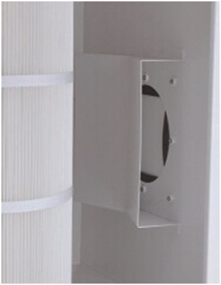
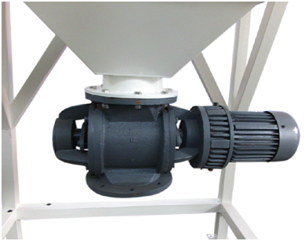
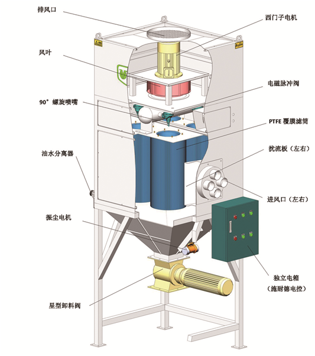

单相工业吸尘器E3J E3JY
适用于钢铁、水泥、家具、陶瓷、化工、建筑、五金、塑胶、粉末作业、切削作业、研磨作业、喷砂作业、有机玻璃加工作业等产生粉尘量大的工况；
适用于产尘量大的工位或全自动生产线长时间连续工作的除尘；
适用于挤塑成型机配套除尘、扩散板成型一体机、粉体投料作业、磨边作业、裁切作业等粉尘量极大的工况。
- 产品介绍
- 联系我们
▲ 优势特点
1、结构紧凑，坚固耐用 本机配置三个碳刷马达，机顶置式设计，结构紧凑；配置专用的 PU 工业脚轮，减震、耐磨、耐油污性好，移动方 便灵活。收集桶采用足 1.0mm 厚不锈钢材质，美观耐用，耐腐蚀性强，5 年内非人为损坏免费更换。
2、碳刷马达，吸力强劲 3 个 1.2kw 的碳刷吸尘马达，吸力强劲，设置为 3 马达独立开关控制，客户可根据现实工况开关控制电机的 启动和停止，从而达到调整风量的效果，节能环保。
3、 内置旋风分离器，为过滤器”减负” 集尘上桶内部设置旋风分离器，灰尘从吸尘口进入经过旋风分离器，首先将大颗粒粉尘过滤，可以为后置的滤筒 式过滤器减轻负担。
4、 HEPA 级过滤，拒绝“透尘” 采用日本进口东丽‘TORAY’聚酯纤维滤纸基材，表面进行 PTFE 覆膜处理，过滤精度对 0.3μm 粒径大小的 粉尘过滤精度达 99%以上，而且 PTFE 覆膜后表面光滑，粉尘及少量水分不易吸附。
5、 专利的旋片振尘结构，拒绝堵塞 采用汇乐专利结构【专利号：201220489001.3】的旋片振尘清灰，国内首创的高效滤筒过滤器机械振尘装置，清灰效果好，简单、方便、经济。通过旋片振尘使堆积在滤筒表面的粉尘脱落

6、 专业制造，专注品质
集尘桶盖一次旋压成型，抗变形能力好、制品性能高，尺寸公差小。
2.0mm厚SPCC材质，静电喷涂，高温烘烤。
真空压力表，实时显示集尘桶内负压状态。
集尘桶底部配置有 4 个 2 寸万向脚轮，轮体采用超级聚氨酯（PU）材质，减震、耐磨、耐油污性能优良，单个承重 40kg，内置结构，防止撞坏，脚轮固定板采用弓形结构，减振性好